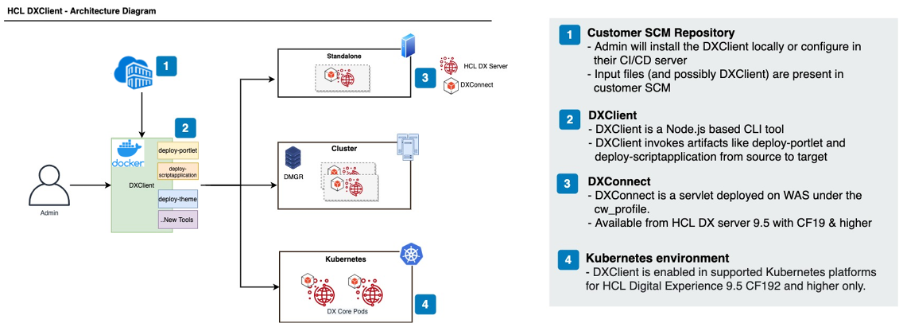

DXClient
DXClient is a command line tool featuring a single, unified interface to all HCL DX automation and CI/CD-related tasks. It helps developers manage several DX tasks such as uploading one or more portlets, Script Applications, and themes. Administrators can manage WCM libraries, PZN rules, shared libraries, etc.
DXClient can take artifacts developed locally and deploy them to HCL DX servers independently of whether these are deployed on-premises platforms in standalone, cluster, or farm-topologies, or in a container environment.
DXClient is meant to be the one-stop, platform-independent solution that lets you integrate HCL DX with any automation infrastructure of your choice.
DXClient comes with two deployment options:
-
First option is to deploy using the DXClient container package. DXClient is packaged as a container that you can run using OCI-based runtimes such as Docker or Podman. It is available as a container image from HCL DX 9.5 CF196 and later releases. For more information, see DXClient installation using container package.
-
The alternative option is to deploy DXClient as native JavaScript code. Users who want to use this deployment option must install their own Node.js and Node Package Manager (npm) runtime environment in the correct version. Users must also install the required dependencies. For more information, see DXClient installation using native js package.
Information about DXClient versions and distribution
DXClient is now free to download and install through NpmJS and Harbor repositories. After openly distributing DXClient, the versioning format of DXClient is now changed from 1.xx.x to <CFNumber>.x.x. For example, the version of DXClient in the previous release was "1.29.0". Starting CF221, the versioning format uses the corresponding CF number of the DX deployment, making the DXClient version for CF221 "221.0.0".
HCL DX also introduces a license agreement which can be accepted using the command accept-license. For command details, see DXClient information commands.
Architecture
The following image illustrates the DXClient Architecture diagram:

Installing DXClient using the container package from HCL Software portal
The container package provides a fully packaged OCI-compliant container that contains everything to successfully run DXClient. You may use any container runtime that implements OCI Runtime Specification (for example, Docker or Podman).
In addition, the package includes scripts for all operating systems that make it simpler to work with the container image. These scripts handle the storage for the container and sync input files with the container itself.
Note
When you upgrade to use the container image DXClient, you must first uninstall the Node.js DXClient.
-
Navigate to the
<working-directory>folder where you wish to use the DXClient from. -
Download the DXClient.zip file (DXClient_VX_XXXXXXXX-XXXX.zip) to a local directory on the local workstation from your HCL Digital Experience 9.5 CF196 or higher entitlements on the HCL Software License Portal.
Note
If you are upgrading from the node to container image version of DXClient, you must first uninstall or unlink the current version using the following command before installing the newer version.
make unlinkmake_unlink.bat -
Extract the DXClient.zip file.
Note
The default OCI runtime for DXClient is docker. If you wish to use any other OCI runtime, run the following command before proceeding further.
export CONTAINER_RUNTIME=<YOUR_CONTAINER_RUNTIME> # For example: export CONTAINER_RUNTIME=podmanset CONTAINER_RUNTIME=<YOUR_CONTAINER_RUNTIME> :: For example: set CONTAINER_RUNTIME=podman -
Load
dxclient.tar.gzimage.docker load < dxclient.tar.gzdocker load -i dxclient.tar.gz -
Optional: Add DXClient to your PATH. Open terminal and add path to the DXClient bin directory to your PATH variable to be able to call DXClient from any directory. If you plan to run multiple versions of DXClient on the same system in parallel, you may want to skip this step.
export PATH=<working-directory>/bin:$PATHOpen command prompt, add
dxclient.batscript in the bin directory to the PATH variable, to call DXClient from any directory.set PATH=<working-directory>\bin;%PATH%Note
You will lose these changes by closing the terminal/command prompt. If you set in system path permanently, kindly take the necessary steps to remove it.
-
Set appropriate read and execute permissions as per user/group/owner.
chmod xxx <working-directory>/bin # where xxx is a 3-digit number where each digit can be anything from 0 to 7. # Ref: https://wiki.archlinux.org/title/File_permissions_and_attributes#Numeric_method- Right click
<working-directory>/bindirectory > "Properties" > "Security" Tab. - Set the appropriate permission for the folder.
- Right click
-
Run
dxclient -Vto verify that the required version of DXClient command line is installed. -
A folder named
storewill be created in your working directory. This is the shared volume location of your container. If you require to create a new volume directory for a different configuration, set theVOLUME_DIRto the desired directory name and run your task. For example:export VOLUME_DIR=storeForScriptApplication # or if you want spaces in its value, enclosed it in double quotes ("") export VOLUME_DIR="store for script application"set VOLUME_DIR=storeForScriptApplication :: or if you want spaces in its value set VOLUME_DIR=store for script applicationWarning
Do not enclose the value of
VOLUME_DIRin double quotes ("") in Windows. This will produce unwanted errors when executing dxclient commands.The
VOLUME_DIRwill require read and write access permissions. Set appropriate permissions for theVOLUME_DIRas per user/group/owner.chmod xxx <working-directory>/<VOLUME_DIR> # where xxx is a 3-digit number where each digit can be anything from 0 to 7. # Ref: https://wiki.archlinux.org/title/File_permissions_and_attributes#Numeric_method- Right click
<working-directory>/<VOLUME_DIR>directory > "Properties" > "Security" Tab. - Set the appropriate permission for the folder.
- Right click
-
You can find the configuration, logger, output, and sample files under location
<working-directory>/<VOLUME_DIR>.Common command arguments can be pre-configured inside the config.json file available under the
<working-directory>/<VOLUME_DIR>folder. A sample configuration file that can be used on on-premises platforms in standalone, cluster (default-config.json) or kubernetes (default-config-kube.json) platforms is also available under/samples/sample-configurations for reference. If you want to override any of the parameters in the config.json, add them in your command line. -
Refer to the sample pipeline provided to find out how to integrate the container image in the automation server.
-
By default, the logs will be available in UTC format. If needed, synchronize your local timezone from host to container using an environment variable as shown in the example below.
Example usage:
export Timezone=Asia/KolkataSET Timezone=Asia/Kolkata
Installing DXClient using the native JavaScript package from HCL Software portal
Note
You are encouraged to use the DXClient container image package from CF196 onwards for easier installation.
-
Complete the following steps to install the DXClient tool in your local development workstation or automation server.
Note
If you are upgrading from CF19, CF191, or later releases, you should first unlink the current version using the following command before installing the newer version.
make unlinkmake_unlink.bat -
Ensure that Node.js version 12.18.3 or later version is installed to the local workstation. The DXClient tool is supported on Microsoft Windows, Linux, and Apple macOS workstations and automation servers.
-
Download the DXClient.zip file (DXClient_VX_XXXXXXXX-XXXX.zip) to a local directory on the local workstation from your DX 9.5 CF19 or later entitlements on the HCL Software License Portal.
-
Extract the DXClient.zip file.
-
From the extracted folder, run the following command.
make installmake_install.bat -
Optional: Run the following command to link your application to the local npm module in your machine. Refer to the following Notes section before you proceed.
make linkmake_link.batNote
- Avoid using this command when scripting deployments from an automation server (for example, in pipelines) as there is a chance of picking up the wrong dependencies during tool version upgrades.
- If the
linkcommand is not used (such as on automation servers), then use the following command to run the application:
./bin/dxclientnode bin/dxclient -
A folder named
storeis created in your working directory. This is the default location for configuration, logger, and output files. If you require to create a new configuration, set the environment variableVOLUME_DIRto the desired directory name and run your task. For example:export VOLUME_DIR=storeForScriptApplication # or if you want spaces in its value, enclose it in double quotes ("") export VOLUME_DIR="store for script application"set VOLUME_DIR=storeForScriptApplication :: or if you want spaces in its value set VOLUME_DIR=store for script applicationImportant
Do not enclose the value of
VOLUME_DIRin double quotes ("") in Windows. This produces errors when executing DXClient commands.The
VOLUME_DIRrequires read and write access permissions. Set appropriate permissions for theVOLUME_DIRas per user/group/owner.chmod xxx <working-directory>/<VOLUME_DIR> # where xxx is a 3-digit number where each digit can be anything from 0 to 7. # Ref: https://wiki.archlinux.org/title/File_permissions_and_attributes#Numeric_method- Right click
<working-directory>/<VOLUME_DIR>directory > "Properties" > "Security" Tab. - Set the appropriate permission for the folder.
- Right click
-
You can find the configuration, logger, and output files under
<working-directory>/<VOLUME_DIR>.Common command arguments can be pre-configured inside the config.json file available under the
<working-directory>/<VOLUME_DIR>folder. A sample configuration file that can be used on on-premises platforms in standalone, cluster (default-config.json), or Kubernetes (default-config-kube.json) platforms is also available under/samples/sample-configurations for reference. If you want to override any of the parameters in the config.json, add them in your command line.
Uninstalling DXClient using the JavaScript package
-
To uninstall the DXClient tool, perform the following commands:
make cleanmake_uninstall.bat -
Optional: To unlink the DXClient tool, perform the following commands:
make unlinkmake_unlink.bat
Public and free DXClient installation options
The following options to install DXClient are available starting CF221. Both options are free to use.
Installing or uninstalling DXClient from NpmJS registry
The option to install or uninstall from the NpmJS registry is only available starting CF221. The DXClient version installed must be 221.0.0.
-
To install the latest version of DXClient, use the
npm install @hcl-software/dxclientcommand. -
To install DXClient globally, use the
npm install -g @hcl-software/dxclientcommand. -
To uninstall DXClient, use the
npm uninstall @hcl-software/dxclientcommand.
Installing DXClient using the container image in the Harbor repository
-
Pull the docker image from https://hclcr.io/harbor/projects/95/repositories/dxclient/artifacts-tab using the following command:
docker pull hclcr.io/dx-public/dxclient:IMAGE_TAG -
Download DXClient scripts.
To download DXClient scripts, go to dxclient-scripts of the HCL-TECH-SOFTWARE GitHub repository. In this repository, you can find the installation and usage details, and the latest scripts for using the containerized version of DXClient which is openly distributed in HCL DX Open Harbor.
Verifying your DXClient installation
Successful installation of the DXClient tool can be checked by using the "dxclient -V" command, which should show the version of the DXClient tool installed.
Once installed, commands can be executed using the DXClient tool to perform CI/CD actions on HCL DX 9.5 servers.
Important
The DXClient version is mostly forward and backward compatible with the DX CF versions. However, in some cases, it might not work as expected if the CF versions are different. Make sure that the CF versions of both DXClient and DX Core are the same in your installation.
You can use "dxclient version-compat" to check version compatibility between DX Core and DXClient.
Note
Refer to the list of features that were released in the following HCL DX 9.5 releases:
-
HCL DX 9.5 CF221 release: **V221.0.0
- A one time license agreement click-through is enabled. To skip the prompt, use the accept-license command.
- DXClient is now openly distributed in NpmJS and Harbor repository.
- In DAM Staging tasks, the parameters
dxWASUsername,dxWASPassword,targetServerWASUsername, andtargetServerWASPasswordare now deprecated and should no longer be used.
-
HCL DX 9.5 CF219 release: **V1.28.0
-
HCL DX 9.5 CF216 release: **V1.25.0
-
HCL DX 9.5 CF215 release: **V1.24.0
-
HCL DX 9.5 CF214 release: **V1.23.0
- Lists all WebDAV themes when you pull themes and themeName is not provided.
- LiveSync is supported in scaled DX environment setups.
- LiveSync Improvements
-
HCL DX 9.5 CF213 release: **V1.22.0
-
HCL DX 9.5 CF211 release: **V1.20.0
-
HCL DX 9.5 CF210 release: **V1.19.0
-
Removed parameters deprecated during CF201 & CF202 deployment.
-
Added additional attribute - virtualPortalContext. Exporting and Importing WCM libraries
-
-
HCL DX 9.5 CF209 release: **V1.18.0
-
HCL DX 9.5 CF208 release: **V1.17.0
-
HCL DX 9.5 CF207 release: **V1.16.0
- Support to set different Container Runtime.
-
HCL DX 9.5 CF202 release: **V1.11.0
-
Deprecated parameter
dxConnectHostname. It is recommended that you start using the replacement parameter-hostnamestarting from CF202 wherever necessary.
-
-
HCL DX 9.5 CF201 release: **V1.10.0
-
An optional parameter
requestIdadded to Deploy theme, Deploy application, Restart DX Core server, and Manage virtual portals. -
Retrieve feature added to the Resource environment provider.
-
Note that a few parameters are deprecated and replaced with new parameters in the DX Core configuration reports. For information, see DX Core server configuration report.
-
-
HCL DX 9.5 CF200 release: **V1.9.0
-
HCL DX 9.5 CF199 release: **V1.8.0
-
HCL DX 9.5 CF198 release: **V1.7.0
-
HCL DX 9.5 CF197 release: **V1.6.0
-
HCL DX 9.5 CF196 release: **V1.5.0
-
HCL DX 9.5 CF195 release: **V1.4.0
-
HCL DX 9.5 CF193 release: **V1.2.0
-
HCL DX 9.5 CF192 release: **V1.1.0
- Undeploy script applications
- Deploy theme (EAR and WebDAV based)
-
HCL DX 9.5 CF19 release: **V1.0.0
Additional information
- The attribute
-dxConnectHostnamehas been deprecated (since CF202) and removed (since CF210) and must be replaced with-hostnamewherever necessary. - The attribute
-targetServerHostname,-targetServerPort,-targetServerUsername,-targetServerPassword&-targetServerProfileNamehas been deprecated (since CF202) and removed (since CF210) and must be replaced with-targetHostname,-targetDxConnectPort,-targetDxConnectUsername,-targetDxConnectPassword&-targetDxProfileNamerespectively wherever necessary. - If deploying or importing huge CICD artifacts using DXClient to the Kubernetes environment, you might receive failure or request pending messages while you run the ceratin tasks. This might happen because of the connection getting closed by the load balancer due to timeout before the response is ready. In such situations, before re-triggering the request, we advise you to check your target server to verify if the artifact has been deployed/imported or the server is up, as the request was already triggered from the client-side. In cases of request pending you are expected to receive a
requestIdwhich you can use to check the status of response later. Find troubleshooting tips here. - As of CF213, the property
DXCONNECT_MAX_MEMORY_SIZE_MBin DXC_ConfigSettings Resource Environment Provider has been removed. Refer DXC_ConfigSettings for more details.
Configuring DXClient
Common command arguments can be pre-configured inside the config.json file available under dist/src/configuration folder. A sample configuration file that can be used on on-premises platforms in standalone, cluster (default-config.json), or kubernetes (default-config-kube.json) platforms is also available under
{
"name":"config.json",
"desc":"The attributes in this file are used for configuration purpose and those must not be deleted.",
"dxProtocol": "",
"dxConnectProtocol": "https",
"hostname": "",
"dxPort": "",
"dxSoapPort": "10033",
"dxConnectPort": "10202",
"dxContextRoot":"/wps",
"contenthandlerPath": "/wps/mycontenthandler",
"projectContext": "",
"virtualPortalContext": "",
"xmlConfigPath": "/wps/config",
"damAPIPort": "",
"ringAPIPort": "",
"damAPIVersion": "v1",
"ringAPIVersion": "v1",
"dxConnectHostname": "",
"dxConnectUsername": "",
"dxConnectPassword": "",
"dxUsername": "",
"dxPassword": "",
"dxProfileName": "",
"dxProfilePath": "",
"dxWASUsername": "",
"dxWASPassword": "",
"enableLogger": true,
"enableBackup": "false",
"lastModifiedAfter": "",
"restoreAsPublished": false,
"targetHostname": "",
"targetDxConnectPort": "",
"targetDxConnectUsername":"",
"targetDxConnectPassword":"",
"targetDxProfileName": "",
"targetServerHostname": "",
"targetServerPort": "",
"targetServerUsername":"",
"targetServerPassword":"",
"targetServerProfileName": "",
"vaultUsername": "",
"vaultPassword": "",
"wcmContentName": "",
"wcmContentId": "",
"wcmContentPath": "",
"wcmSiteArea": "",
"wcmLibraryId": "",
"wcmLibraryName": "",
"wcmProjectName": ""
}
Configuring multiple environments in DXClient
A folder named store is created in your working directory. This is the default location for configuration, logger, and output files. If you require to create a new configuration, set the environment variable VOLUME_DIR to the desired directory name and run your task. For example:
export VOLUME_DIR=storeForScriptApplication
# or if you want spaces in its value, enclose it in double quotes ("")
export VOLUME_DIR="store for script application"
set VOLUME_DIR=storeForScriptApplication
:: or if you want spaces in its value
set VOLUME_DIR=store for script application
Important
- Do not enclose the value of
VOLUME_DIRin double quotes ("") in Windows. This produces errors when executing DXClient commands. - Do not provide a path to set as
VOLUME_DIR. Instead, provide a folder name.
The VOLUME_DIR requires read and write access permissions. Set appropriate permissions for the VOLUME_DIR as per user/group/owner.
chmod xxx <working-directory>/<VOLUME_DIR>
# where xxx is a 3-digit number where each digit can be anything from 0 to 7.
# Ref: https://wiki.archlinux.org/title/File_permissions_and_attributes#Numeric_method
- Right click
<working-directory>/<VOLUME_DIR>directory > "Properties" > "Security" Tab. - Set the appropriate permission for the folder.
You can find the configuration, logger, and output under <working-directory>/<VOLUME_DIR>.
Common command arguments can be pre-configured inside the config.json file available under the <working-directory>/<VOLUME_DIR> folder. A sample configuration file that can be used on on-premises platforms in standalone, cluster (default-config.json), or Kubernetes (default-config-kube.json) platforms is also available under <working-directory>/samples/sample-configurations for reference. If you want to override any of the parameters in the config.json, add them in your command line.
Note
You must create the config.json in each <VOLUME_DIR> folder to set up multiple configurations. Otherwise, the system picks up the configurations specified in the default config.json available under dist/configuration in node version.
DXClient information commands
To display Help documents, check the DXClient version and compatibility, and accept license information for DXClient, refer to the following commands.
Use the following commands to display the Help document for DXClient:
dxclient
dxclient -h, --help
Use the following command to display the DXClient version number:
dxclient -V, --version
Use the following command to display the Help information for a specific command:
dxclient help [command]
Use the following command to skip prompt of click-through license acceptance agreement:
dxclient accept-license
Note
For container versions, you only have to accept the license agreement once for every volume directory created.
Use the following command to show version compatibility details between DX Core and DXClient version-compat:
dxclient version-compat [options]
DXClient commands
Command syntax conventions:
dxclient [command] [options]
Use the following command to execute the deploy portlet action:
dxclient deploy-portlet [options]
Use the following command to execute the undeploy portlet action:
dxclient undeploy-portlet [options]
Use the following command to execute the xmlaccess action:
dxclient xmlaccess [options]
Use the following command to execute the pull script application action:
dxclient deploy-scriptapplication pull [options]
Use the following command to execute the push script application action:
dxclient deploy-scriptapplication push [options]
Use the following command to execute the undeploy script application action:
dxclient undeploy-scriptapplication [options]
Use the following command to execute the restore script application action:
dxclient restore-scriptapplication [options]
Use the following command to execute the deploy application action:
dxclient deploy-application [options]
Use the following command to execute the DX Core restart action:
dxclient restart-dx-core
Use the following command to restart DX Core pods in a Kubernetes deployment:
dxclient restart-core-pods [options]
Use the following command to execute manage-subscriber action:
dxclient manage-subscriber -h
Use the following command to execute manage-syndicator action:
dxclient manage-syndicator -h
Use the following command to execute the deploy theme action:
dxclient deploy-theme [options]
Use the following command to execute the undeploy theme action:
dxclient undeploy-theme [options]
Use the following command to execute the manage-syndicator get-syndication-report action:
dxclient manage-syndicator get-syndication-report [options]
Use the following command to execute the shared-library action:
dxclient shared-library [options]
Use the following command to execute the delete DAM schema action:
dxclient delete-dam-schema [options]
Use the following command to list all DAM schemas present:
dxclient list-dam-schemas [options]
Use the following command to export the personalization rules from the target server:
dxclient pzn-export [options]
Use the following command to import the personalization rules into the target server:
dxclient pzn-import [options]
Use the following command to manage virtual portal tasks in the DX server:
dxclient manage-virtual-portal [options]
Use the following command to register subscriber:
dxclient manage-dam-staging register-dam-subscriber [options]
Use the following command to deregister subscriber:
dxclient manage-dam-staging deregister-dam-subscriber [options]
Use the following command to trigger manual sync:
dxclient manage-dam-staging trigger-staging [options]
Use the following command to create credential vault slot in the DX server:
dxclient create-credential-vault [options]
Use the following command to create the syndication relation between syndicator and subscriber in DX server:
dxclient create-syndication-relation [options]
Use the following command to create, update, delete, export or import a custom property from an existing Resource Environment Provider:
dxclient resource-env-provider [options]
Use this command to export WCM libraries:
dxclient wcm-library-export
Use this command to import WCM libraries:
dxclient wcm-library-import
Use the dx-core-configuration-reports command to get a summary of the configurations of a single DX server or both source and target DX servers, which users can use to compare.
dxclient dx-core-configuration-reports [OPTIONS]
Use this command to sync WebDAV themes in server and then watch for succeeding changes which will immediately reflect in the WebDAV Server:
dxclient livesync push-theme [options]
Use this command to download the theme files in WebDAV Server in preparation for livesync push-theme:
dxclient livesync pull-theme [options]
Limitations
-
For hybrid deployments in which two different hostnames are used for the on-premises DX Core and Kubernetes DX Services, there are no options to enter both the hostnames. You must consider the DXClient function being used and enter the appropriate hostname. For example, for DAM tasks such as
manage-dam-staging, you must enter the Kubernetes hostname. For DX Core tasks such asdeploy-portletyou must enter the on-premises DX Core hostname. -
Starting CF217 (DXClient v1.26.0 and above), it is required to set full access to the bin folder to execute DXClient commands.
-
Currently, the maximum input file size allowed in DXClient is 256 MB.
HCLSoftware U learning materials
For an introduction and a demo on how to use DXClient, go to Staging. To try it out yourself, refer to DXClient Lab.
Related information
- How to translate WCM library content using export and import WCM with DXClient
- DXClient Artifact Types
- Troubleshooting DXClient
- DXConnect
- Sample Pipelines for use with HCL DXClient and Automation servers
- Using DAM staging
- Create or update credential vault slot
- Personalization rules
- Portlets
- Themes
- Script applications
- Resource environment provider
- DAM Indexing